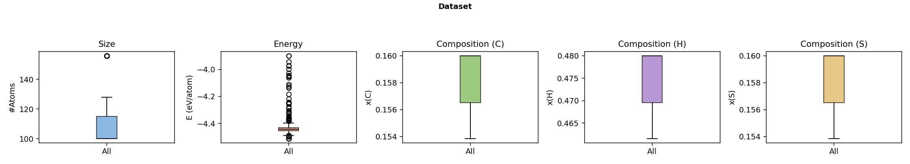
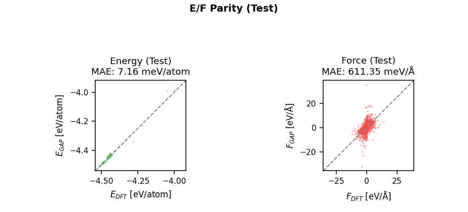

Au–C–H–S
← Back to Periodic Table
Basic Information
System
Au–C–H–S
Type
Quaternary Ligated Nanocluster
Constituent Elements
Au, C, H, S

▦
Dataset (Atom Count / Energy / Composition ×3)
Target: 2310×420px (figsize 16.5×3.0 @ 140dpi)

▦
Energy / Force Parity (Test Set)
Target: 924×420px (figsize 6.6×3.0 @ 140dpi)
Model
GAP File